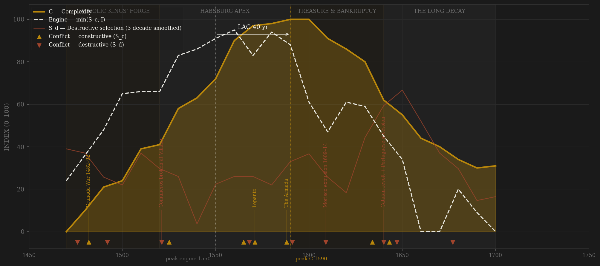
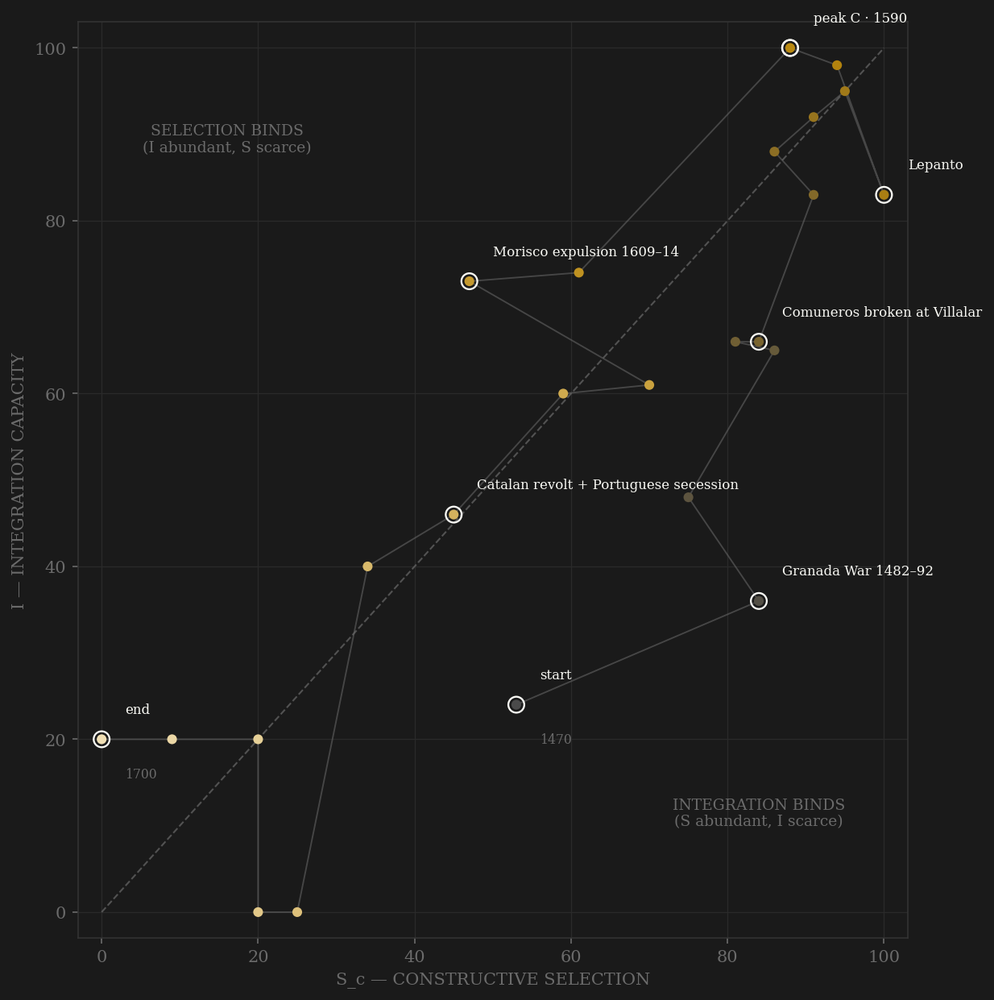

Spain is the purest 'positions become assets' arc in the roster. The Catholic Kings built a genuine merit channel — university-trained letrados over grandees on the Council of Castile from 1480, a university boom that by the 1580s put some three per cent of the male cohort through matriculation (Kagan), the Granada war as a ten-season forge for the tercio machine. The engine peaks in the 1550s–70s: ladder near-full function, Ottoman and Valois contests at maximum, treasure-fed integration still climbing. Then the conversion. Limpieza de sangre statutes from Toledo 1547 price entry by blood; the colegios mayores capture the council bench; and from Lerma's valimiento (1598) the crown industrializes what war finance had begun — regimientos, escribanías, hábitos, hidalguía patents, whole villages, finally Indies viceroyalties (1687) sold outright. Complexity peaks in the 1590s — urban Castile at its densest, the world-empire complete with Portugal, matriculations at crest — for a lag of +40 years, inside the window. And then the annuity pattern in its cleanest form: the Siglo de Oro's artistic maximum (Velázquez, Calderón, Quevedo) lands 1620–1650, AFTER the fiscal engine is broken — Hamilton's registered treasure halves from its 1590s peak, the Castilian cities halve (Toledo 54k→20k, Segovia 27k→8k, Valladolid 40k→20k), and the nine decree-bankruptcies — 1557, 1560, 1575, 1596, 1607, 1627, 1647, 1652, 1662 — run one per crisis decade like a metronome. Under the v1 combat-only definition the engine instead peaks on the Armada decade and the lag collapses to +10 SIMULTANEOUS: war pressure peaked with the empire, but the contest that mattered — who gets in — had peaked a generation earlier. The definitions disagree, and the disagreement is the finding.

The trajectory climbs both axes together through the Catholic Kings' forge — rare in the sample: selection and integration built in step, contest disciplining a state that was simultaneously wiring itself together through fairs, corregidores and the Seville monopoly. It rides the upper-right corner through the Habsburg apex (both axes above 80 for five straight decades, 1550–1600), then falls down the SELECTION axis first: at peak complexity (1590s) integration reads 100 while the contestability composite has already slipped — limpieza, colegio capture and venality narrowing the ladder while the treasure flood still held the plumbing at maximum. That is the H-RENT-001 shape: selection decays before integration, from the top of the elite-entry channel, not from external peace. The 17th century is a long diagonal slide — vellón chaos and the broken Seville registry drag I down after S_c, the 1640 fracture knocks both — ending pinned near the origin: a monarchy still standing, with nothing selecting and nothing clearing, waiting for a childless king to die.
Coded by locus and target, never by outcome. Spain works the rule hard in both directions. The Dutch revolt — eighty years of it — stays channel B throughout: fought at the periphery, the Netherlands are not the Castilian core (the SAME war is S_d in the Dutch composite, whose core it penetrated — locus coding is per-polity by design, and this pair is its cleanest demonstration). Cádiz burned twice (1587, 1596) stays B by the Hannibal rule: a port raided, the machinery untouched. Against that, the ledger's S_d runs through violence the crown aimed at its own coordination: the Inquisition's autos and the 1492 expulsion amputating the realm's commercial population; the Comuneros — Castile's own cities in arms against the crown machinery, broken at Villalar; the Morisco revolt and then the 1609–14 expulsion, S_d at maximum locus-purity without a single battle — 275,000 productive subjects deported and Valencia's credit system collapsing with them; Aragón 1591, a royal army breaking a constituent kingdom's constitution; the 1640 fracture — Catalonia, Portugal, Andalusian and Aragonese plots, Naples and Sicily, five limbs in revolt in one decade; and the armed palace coups of 1669 and 1677, government changed by troop movement. Portugal after December 1640 flips to B: a war against a de facto external polity. The partition treaties of 1698–1700 score nothing — Spain is the stake, not a player.
| YEAR | CONFLICT | CODE | CODING RATIONALE |
|---|---|---|---|
| 1476 | War of the Castilian Succession (Toro) | Sd | Contested throne fought inside Castile with Portuguese intervention — a war on the polity's own apex |
| 1482 | Granada War 1482–92 | Sc | Ten campaigning seasons against an external emirate — the forge that built the tercio's supply machine |
| 1492 | Expulsion of the Jews | Sd | The state amputating its own financial population (~70–100k) — violence aimed inward, no battle required |
| 1521 | Comuneros broken at Villalar | Sd | Core Castilian cities in armed revolt against the crown machinery, a junta claiming the kingdom — the century's S_d showcase |
| 1525 | Pavia | Sc | Habsburg–Valois peer contest at its sharpest — the French king captured on an Italian field, core untouched |
| 1565 | Malta relieved | Sc | The Ottoman Mediterranean contest — external rivalry disciplining fleet and fisc |
| 1568 | Morisco revolt (Alpujarras) 1568–71 | Sd | Internal population at war on home soil after the 1567 pragmatic; ~80k forcibly dispersed through Castile (key-annotation ceded to Lepanto — separate ledger row, one arc label) |
| 1571 | Lepanto | Sc | Peak external contest — the largest galley battle in history, fought at the empire's maritime frontier |
| 1588 | The Armada | Sc | Peer-polity naval race lost in the Channel — external locus; the fleet, not the core, destroyed |
| 1591 | Aragón rising | Sd | Royal army breaks a constituent kingdom's constitutional machinery; the Justicia beheaded without trial |
| 1609 | Morisco expulsion 1609–14 | Sd | ~275,000 subjects deported, a third of Valencia — the state amputating its own productive population: S_d at maximum locus-purity, no battle |
| 1634 | Nördlingen | Sc | Thirty Years War peer contest — the Cardinal-Infante's tercios at their last great victory, far from the core |
| 1640 | Catalan revolt + Portuguese secession | Sd | The core fracturing: Corpus de Sang, Braganza crowned, Medina Sidonia and Híjar plots — five limbs in revolt in one decade |
| 1643 | Rocroi | Sc | The Army of Flanders' myth broken by Condé — external field defeat, machinery intact (what remained of it) |
| 1647 | Naples & Sicily risings | Sd | Constituent kingdoms of the monarchy in internal revolt (Masaniello) — locus inside the composite polity |
| 1677 | Don Juan José's second coup | Sd | An army marched on Madrid to change the ministry — government by armed demonstration; bloodless, still S_d by locus |
| COMPONENT | GRADE | BASIS |
|---|---|---|
| S_c — Constructive (v2 contestability) | ○ scholar-coded | A: letrado-ladder arc 0.40 (Kagan 1974 chs.4-5, 9-10; Elliott ch.6 limpieza; Domínguez Ortiz sale-of-offices/hidalguías; Thompson venality) · B: external war-years 0.30 HARD CAP, locus-cleaned (Dutch revolt = B, periphery; Cádiz raids = B, Hannibal rule; Portugal post-1640 = B, de facto external; partition treaties = bystander, ~0) · C: within-rules contest 0.30 (Cortes servicio/millones bargaining — Fortea Pérez; conciliar and valido competition while bloodless; last Cortes 1655-58). No deviation from 0.4/0.3/0.3. Ledger: data/raw/spain_habsburg/coding_ledger_v2.csv |
| S_c — v1 combat (frozen comparator) | ○ coded | Channel B alone (external-war-only), min-maxed — the prior definition's operative content, synthesized per the straight-to-v2 convention |
| S_d — Destructive | ○ coded | Locus-and-target: Castilian succession war 1475-79, Inquisition autos + 1492 expulsion, Comuneros/Germanías 1519-23, Alpujarras 1568-71, Aragón 1591, expulsion 1609-14, the 1640-48 fracture (Catalonia/Portugal/Naples/Sicily + grandee plots), armed regency coups 1669/1677, Messina defection 1674 |
| I — Integration | ● measured 0.40 + ○ coded 0.60 | Hamilton 1934 registered treasure at Seville, annualized quinquennia 1503-1660 (Tables 1-2; log10) — pre-1500 true zero, post-1660 honest NaN (registry breakdown; Morineau contraband caveat in SOURCES.md) · coded: Medina del Campo fair/credit arc (killed by the 1575 Genoese freeze, defunct ~1606), Casa de Contratación 1503, flota codified 1564-66, Spanish Road, vellón chaos as I decay, 1680-86 monetary surgery |
| C — Complexity | ◐ measured + countable + coded | Equal-weight: Maddison/Álvarez-Nogal & Prados GDPpc (measured, annual — peak 1550s-60s, -30% to the 1640s trough) · de Vries urbanization anchors (the Castilian urban collapse 1590-1650: Toledo 54k→20k, Segovia 27k→8k, Valladolid 40k→20k) · Kagan matriculations (countable ◐, ~20k+/yr crest 1580s) · Siglo de Oro output 0-10 (peak 1620s-30s = the annuity pattern) · imperial extent 0-10 (Portugal annexed 1580 = first world empire) |
| E — Entropy | ● countable + measured | 0.30 state bankruptcies — the countable spine: 1557, 1560, 1575, 1596, 1607, 1627, 1647, 1652, 1662 (Drelichman & Voth) · 0.25 Hamilton New Castile price index |Δ%/decade| (measured) · 0.25 monetary chaos (maravedí 0.067g→0.018g fine silver; vellón premium >100% 1642, ~200% 1670s; 1680 crash) · 0.20 demographic shock (plagues 1596-1602 ~600k, 1647-52 ~500k, 1676-85 ~250k; famines; expulsions) |
| R — Renewal | ◐ anchored | Peninsular population, raw millions: ~5.2M 1470s → 8.1M 1591 census peak → 7.0M 1640s → ~7.4M 1700 (Nadal, Pérez Moreda, Livi-Bacci anchors; Maddison's 8.77M 1700 sits on a different basis — flagged, not blended) |
24 decade rows 1470–1700 built by scripts/build_spain_sicre.py (straight-to-v2 per AMENDMENT_S_definition_v2.md; audit trail in components_audit.csv, per-decade channel ordinals + rationales in coding_ledger_v2.csv, master-file pulls in master_extract.csv). Sc_constructive = 0.40 elite-entry + 0.30 external rivalry (hard cap) + 0.30 within-rules contest, channels min-maxed 0–100 within polity; Sc_v1_combat = channel B alone, the prior definition's operative content. Frozen-protocol lag (3-decade centered rolling mean, engine = min(Sc, I)) under BOTH definitions: v2 engine 1550 → C 1590 = +40 PASS (unsmoothed 1560→1590 = +30 PASS); v1 engine 1580 → C 1590 = +10 SIMULTANEOUS (unsmoothed same). The near-flip is the amendment working: combat pressure peaked WITH the empire (Lepanto→Armada), but elite-entry contest peaked a generation earlier — under v1 Spain would read as engine-and-complexity-simultaneous; under v2 the rentier conversion (limpieza 1547, colegio capture, Lerma's office market from 1598) dates the engine's crest to the 1550s–70s and the lag lands in-window. Tie-break robustness: smoothed engine ties 1550/1570 exactly (90.667) — idxmax takes 1550; taking 1570 gives +20, still PASS. Raw C ties 1590/1600 — smoothing resolves to 1590; taking 1600 still PASS. Binder at peak C = SELECTION (Sc 88 vs I 100): the H-RENT-001 shape — the ladder narrowed while the treasure flood held the plumbing at max. Known gaps kept honest: I treasure component NaN after 1660 (Hamilton's registry series ends; Morineau's contraband recovery deliberately excluded — the CROWN's machine is the object), urbanization NaN pre-1500, E inflation NaN pre-1510. Rebuild: build_spain_sicre.py, then polity_report.py --slug spain_habsburg